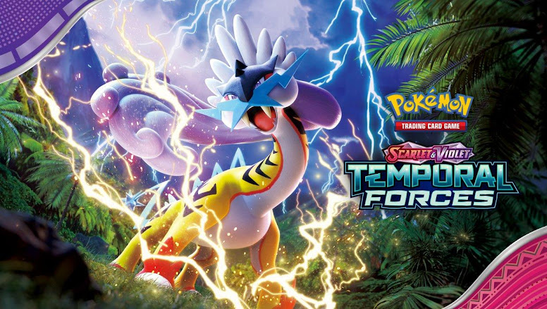

Nova Coleção de Pokémon TCG é Anunciada - Escarlate e Violeta: Forças Temporais
por Danilo Andretta - 10/01/2024
A The Pokémon Company International anunciou a nova expansão de Pokémon TCG - Escarlate e Violeta: Forças Temporais, que estará disponível no mundo todo a partir de 22 de março de 2024.
Apresentadas pela primeira vez na série Black & White, as cartas ACE SPEC retornarão ao Pokémon Estampas Ilustradas na expansão Forças Temporais. As cartas ACE SPEC têm efeitos poderosos, mas cada baralho será limitado a apenas uma carta ACE SPEC. Além disso, as cartas ACE SPEC na coleção Forças Temporais contarão com um novo e incrível design na cor rosa-choque e podem vir como cartas de Treinador ou cartas de Energia Especial.
A próxima expansão também contará com novos Pokémon, incluindo Onda Ando (Walking Wake) e Folhas Férreas (Iron Leaves), conforme originalmente apresentados nos jogos Pokémon Scarlet e Violet. Os Treinadores também verão novos Pokémon Ancestrais e Futuristas, e cartas de Treinador, assim como Pokémon ex Tera com tipos trocados.
Algumas cartas notáveis desta expansão incluem:
Sete cartas ACE SPEC de Treinador de Energia Especial
13 Pokémon ex e dois Pokémon ex Tera
22 cartas Ilustração Rara de Pokémon
10 cartas Ilustração Rara Especial de Pokémon e de Apoiador
Seis cartas Rara Hiper douradas com textura especial
A coleção Forças Temporais também contará com duas versões do item Coleção Treinador Avançado, que terá Onda Ando e Folhas Férreas em destaque. A versão de Onda Ando terá uma carta promocional de Juba Sopro (Flutter Mane) e a versão de Folhas Férreas terá uma carta promocional de Espinhos Férreos (Iron Thorns).